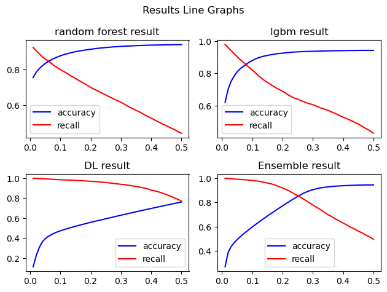

import numpy as np
import pandas as pd앙상블 코드 정리
1. 각 모델 결과 불러오기
deep = pd.read_csv('epo5_result_df.csv')
rf = np.load('RF_predprob.npy')
lgbm = np.load('LGB_predprob.npy')result = deep.loc[:, ['True_Labels', 'Probability_1']]
result.rename(columns={'Probability_1': 'deep'}, inplace=True)result['rf'] = rf
result['lgbm'] = lgbmresult['avg'] = (result['deep']+result['rf']+result['lgbm'])/3 # 앙상블 열# 디폴트 예측
result['predict'] = 0
result.loc[result['avg']>0.5, 'predict'] = 1 # 더 큰값으로 분류- 각 모델 결과(사무 1확률) 확인
result| True_Labels | deep | rf | lgbm | avg | predict | |
|---|---|---|---|---|---|---|
| 0 | 0 | 0.028129 | 0.04 | 0.018466 | 0.028865 | 0 |
| 1 | 0 | 0.113840 | 0.00 | 0.002707 | 0.038849 | 0 |
| 2 | 0 | 0.041808 | 0.00 | 0.001332 | 0.014380 | 0 |
| 3 | 0 | 0.389585 | 0.00 | 0.010680 | 0.133422 | 0 |
| 4 | 0 | 0.621263 | 0.19 | 0.048522 | 0.286595 | 0 |
| ... | ... | ... | ... | ... | ... | ... |
| 172320 | 0 | 0.006937 | 0.00 | 0.001703 | 0.002880 | 0 |
| 172321 | 0 | 0.629046 | 0.03 | 0.044869 | 0.234638 | 0 |
| 172322 | 0 | 0.014054 | 0.00 | 0.001915 | 0.005323 | 0 |
| 172323 | 1 | 0.630495 | 0.67 | 0.514004 | 0.604833 | 1 |
| 172324 | 0 | 0.802369 | 0.00 | 0.009068 | 0.270479 | 0 |
172325 rows × 6 columns
result.loc[result['True_Labels']==0, ].describe()| True_Labels | deep | rf | lgbm | avg | predict | |
|---|---|---|---|---|---|---|
| count | 160320.0 | 160320.000000 | 160320.000000 | 160320.000000 | 160320.000000 | 160320.000000 |
| mean | 0.0 | 0.266082 | 0.043691 | 0.044548 | 0.118107 | 0.021744 |
| std | 0.0 | 0.258561 | 0.121256 | 0.104946 | 0.132973 | 0.145847 |
| min | 0.0 | 0.002595 | 0.000000 | -0.022201 | 0.002631 | 0.000000 |
| 25% | 0.0 | 0.029858 | 0.000000 | 0.002205 | 0.011867 | 0.000000 |
| 50% | 0.0 | 0.168876 | 0.000000 | 0.005221 | 0.067861 | 0.000000 |
| 75% | 0.0 | 0.485648 | 0.020000 | 0.033232 | 0.194122 | 0.000000 |
| max | 0.0 | 0.974354 | 1.000000 | 0.872750 | 0.925068 | 1.000000 |
result.loc[result['True_Labels']==1, ].describe()| True_Labels | deep | rf | lgbm | avg | predict | |
|---|---|---|---|---|---|---|
| count | 12005.0 | 12005.000000 | 12005.000000 | 12005.000000 | 12005.000000 | 12005.000000 |
| mean | 1.0 | 0.607077 | 0.443960 | 0.393382 | 0.481473 | 0.495877 |
| std | 0.0 | 0.171042 | 0.308759 | 0.246633 | 0.196169 | 0.500004 |
| min | 1.0 | 0.006812 | 0.000000 | 0.001332 | 0.003101 | 0.000000 |
| 25% | 1.0 | 0.512234 | 0.155000 | 0.143736 | 0.319139 | 0.000000 |
| 50% | 1.0 | 0.635645 | 0.430000 | 0.433675 | 0.497790 | 0.000000 |
| 75% | 1.0 | 0.729502 | 0.710000 | 0.611887 | 0.643833 | 1.000000 |
| max | 1.0 | 0.962729 | 1.000000 | 0.878286 | 0.933236 | 1.000000 |
2. 디폴트 예측 앙상블 결과 확인
from sklearn.metrics import accuracy_score, confusion_matrix, precision_score, recall_score, f1_score
def cal_result(preds, y):
conf_matrix = confusion_matrix(y, preds)
accuracy = accuracy_score(y, preds)
precision = precision_score(y, preds)
recall = recall_score(y, preds)
f1 = f1_score(y, preds)
return accuracy, recall
def cal_result2(preds, y):
conf_matrix = confusion_matrix(y, preds)
accuracy = accuracy_score(y, preds)
precision = precision_score(y, preds)
recall = recall_score(y, preds)
f1 = f1_score(y, preds)
# 결과 출력
print(f"Accuracy: {accuracy}")
print(f"Precision: {precision}")
print(f"Recall: {recall}")
print(f"F1-Score: {f1}")
print("Confusion Matrix:")
print(conf_matrix)
return conf_matrixcal_result2(result['predict'], result['True_Labels']) # 앙상블 기본 threshold 결과Accuracy: 0.9446510953140868
Precision: 0.6306812162305329
Recall: 0.49587671803415245
F1-Score: 0.555213579556053
Confusion Matrix:
[[156834 3486]
[ 6052 5953]]array([[156834, 3486],
[ 6052, 5953]])3. threshold 조정
def check_threshold(x, y_acc, y_rec, result, col):
for i in x:
threshold = i
result['predict'] = 0
result.loc[result[col]>threshold, 'predict'] = 1
acc, rec = cal_result(result['predict'], result['True_Labels'])
y_acc.append(acc)
y_rec.append(rec)
return y_acc, y_recx = np.arange(0.01, 0.51, 0.01)
rf_y_acc = []
rf_y_rec = []
deep_y_acc = []
deep_y_rec = []
lgbm_y_acc = []
lgbm_y_rec = []
avg_y_acc = []
avg_y_rec = []
# 모델별 acuuracy, recall 저장
rf_y_acc, rf_y_rec = check_threshold(x, rf_y_acc, rf_y_rec, result, 'rf')
deep_y_acc, deep_y_rec = check_threshold(x, deep_y_acc, deep_y_rec, result, 'deep')
lgbm_y_acc, lgbm_y_rec = check_threshold(x, lgbm_y_acc, lgbm_y_rec, result, 'lgbm')
avg_y_acc, avg_y_rec = check_threshold(x, avg_y_acc, avg_y_rec, result, 'avg')- 모델 별 accuracy, recall 비교 그래프
import matplotlib.pyplot as plt
# 2x2 그래프 생성
plt.subplot(2, 2, 1)
plt.plot(x, rf_y_acc, label='accuracy', color='blue')
plt.plot(x, rf_y_rec, label='recall', color='red')
plt.title('random forest result')
plt.legend()
plt.subplot(2, 2, 2)
plt.plot(x, lgbm_y_acc, label='accuracy', color='blue')
plt.plot(x, lgbm_y_rec, label='recall', color='red')
plt.title('lgbm result')
plt.legend()
plt.subplot(2, 2, 3)
plt.plot(x, deep_y_acc, label='accuracy', color='blue')
plt.plot(x, deep_y_rec, label='recall', color='red')
plt.title('DL result')
plt.legend()
plt.subplot(2, 2, 4)
plt.plot(x, avg_y_acc, label='accuracy', color='blue')
plt.plot(x, avg_y_rec, label='recall', color='red')
plt.title('Ensemble result')
plt.legend()
# 그래프에 제목과 축 레이블 추가
plt.suptitle('Results Line Graphs')
plt.tight_layout() # 서브플롯 간 간격 조절
# 그래프 표시
plt.show()
accuracy, recall 1:1 비율 최적의 threshold 확인
rf_result = np.sum([rf_y_acc, rf_y_rec], axis=0)
deep_result = np.sum([deep_y_acc, deep_y_rec], axis=0)
lgbm_result = np.sum([lgbm_y_acc, lgbm_y_rec], axis=0)
avg_result = np.sum([avg_y_acc, avg_y_rec], axis=0)
print("====== accuracy, recall 1:1 비율 최적의 threshold =========")
print("위치: ",np.argmax(rf_result), np.argmax(deep_result), np.argmax(lgbm_result), np.argmax(avg_result))
print("임계치값: ", x[2], x[36], x[5], x[25])
print("최대값: ", rf_result[2], deep_result[36], lgbm_result[5], avg_result[25])====== accuracy, recall 1:1 비율 최적의 threshold =========
위치: 2 36 5 25
임계치값: 0.03 0.37 0.06 0.26
최대값: 1.6958764956789065 1.5833042533356156 1.71489993923297 1.7053350552169104print('====== rf threshold = 0.03======')
threshold = 0.03
result['predict'] = 0
result.loc[result['rf']>threshold, 'predict'] = 1
a = cal_result2(result['predict'], result['True_Labels'])
print('====== deep threshold = 0.37======')
threshold = 0.37
result['predict'] = 0
result.loc[result['deep']>threshold, 'predict'] = 1
b = cal_result2(result['predict'], result['True_Labels'])
print('====== lgbm threshold = 0.06======')
threshold = 0.06
result['predict'] = 0
result.loc[result['lgbm']>threshold, 'predict'] = 1
b = cal_result2(result['predict'], result['True_Labels'])
print('====== avg threshold = 0.02======')
threshold = 0.26
result['predict'] = 0
result.loc[result['avg']>threshold, 'predict'] = 1
b = cal_result2(result['predict'], result['True_Labels'])====== rf threshold = 0.03======
Accuracy: 0.8054141883069781
Precision: 0.24914349639918895
Recall: 0.8904623073719283
F1-Score: 0.38935023310023315
Confusion Matrix:
[[128103 32217]
[ 1315 10690]]
====== deep threshold = 0.37======
Accuracy: 0.6770985057304512
Precision: 0.16635319662981482
Recall: 0.9062057476051645
F1-Score: 0.28110384744580247
Confusion Matrix:
[[105802 54518]
[ 1126 10879]]
====== lgbm threshold = 0.06======
Accuracy: 0.8288524590163935
Precision: 0.2744182446726175
Recall: 0.8860474802165764
F1-Score: 0.4190517462130912
Confusion Matrix:
[[132195 28125]
[ 1368 10637]]
====== avg threshold = 0.02======
Accuracy: 0.8637690410561439
Precision: 0.3189380307478612
Recall: 0.8415660141607664
F1-Score: 0.46257039512842824
Confusion Matrix:
[[138746 21574]
[ 1902 10103]]accuracy, recall 1:2 비율 최적의 threshold 확인
rf_result2 = np.sum([rf_y_acc, np.array(rf_y_rec)*2], axis=0)
deep_result2 = np.sum([deep_y_acc, np.array(deep_y_rec)*2], axis=0)
lgbm_result2 = np.sum([lgbm_y_acc, np.array(lgbm_y_rec)*2], axis=0)
avg_result2 = np.sum([avg_y_acc, np.array(avg_y_rec)*2], axis=0)
print("====== accuracy, recall 1:2 비율 최적의 threshold =========")
print("위치: ",np.argmax(rf_result2), np.argmax(deep_result2), np.argmax(lgbm_result2), np.argmax(avg_result2))
print("임계치값: ", x[0], x[30], x[2], x[16])
print("최대값: ", rf_result2[0], deep_result2[30], lgbm_result2[2], avg_result2[16])====== accuracy, recall 1:2 비율 최적의 threshold =========
위치: 0 30 2 16
임계치값: 0.01 0.31 0.03 0.17
최대값: 2.6070843662328667 2.5091515969124765 2.6338171296076704 2.61807193711842print('====== rf threshold = 0.01======')
threshold = 0.01
result['predict'] = 0
result.loc[result['rf']>threshold, 'predict'] = 1
a = cal_result2(result['predict'], result['True_Labels'])
print('====== deep threshold = 0.31======')
threshold = 0.31
result['predict'] = 0
result.loc[result['deep']>threshold, 'predict'] = 1
b = cal_result2(result['predict'], result['True_Labels'])
print('====== lgbm threshold = 0.03======')
threshold = 0.03
result['predict'] = 0
result.loc[result['lgbm']>threshold, 'predict'] = 1
b = cal_result2(result['predict'], result['True_Labels'])
print('====== avg threshold = 0.17======')
threshold = 0.17
result['predict'] = 0
result.loc[result['avg']>threshold, 'predict'] = 1
b = cal_result2(result['predict'], result['True_Labels'])====== rf threshold = 0.01======
Accuracy: 0.7551893225010881
Precision: 0.21208074178654557
Recall: 0.9259475218658892
F1-Score: 0.3451155714928825
Confusion Matrix:
[[119022 41298]
[ 889 11116]]
====== deep threshold = 0.31======
Accuracy: 0.6359321050340926
Precision: 0.15356250256074078
Recall: 0.936609745939192
F1-Score: 0.2638631403562293
Confusion Matrix:
[[98343 61977]
[ 761 11244]]
====== lgbm threshold = 0.03======
Accuracy: 0.7514347889162919
Precision: 0.21148482976772043
Recall: 0.9411911703456893
F1-Score: 0.34536618168480254
Confusion Matrix:
[[118192 42128]
[ 706 11299]]
====== avg threshold = 0.17======
Accuracy: 0.7223618163354127
Precision: 0.19419082888202469
Recall: 0.9478550603915036
F1-Score: 0.32234214328205996
Confusion Matrix:
[[113102 47218]
[ 626 11379]]